Специализация – выставки.
- Макеты простых геометрических фигур с окраской в различных цветовых системах. Окраска должна выявлять пластические особенности фигуры, придавать ей выразительность и эстетические качества.
- Эскиз объемно-пространственной рекламы различных культурных акций: выставок, конференций, зрелищ и пр.
- Работа на планшете 40х60 или 40х40 см. Задача окраски сложной формы – выявить её динамику, ритмы, конструкцию, масштабность; придать декоративность, гармонизовать, выразить эмоциональные ассоциации, заложенные в рисунке формы.
Авторы работ: Бушук Е., Уралова Т., Приболовец С., Рухлевич Н., Михеенко В., Пучкова М.
Просмотр 31 января 2005
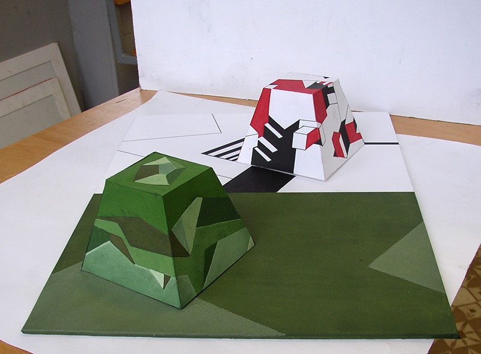
Разрушение формы
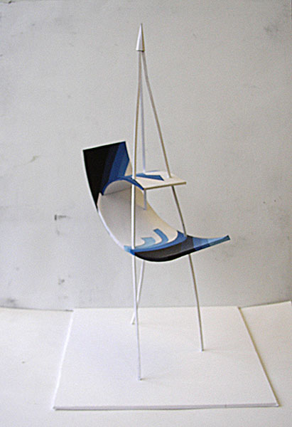
Водный спорт
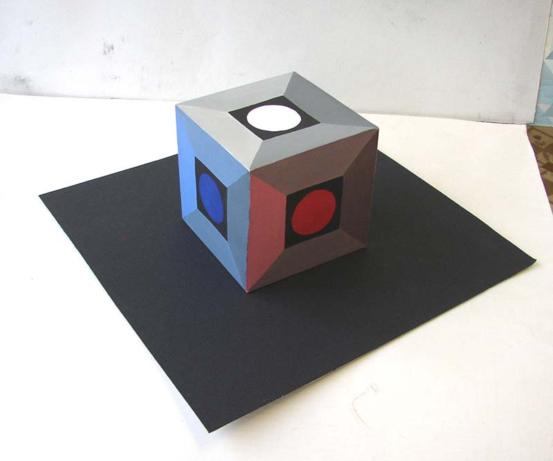
Выявление граней
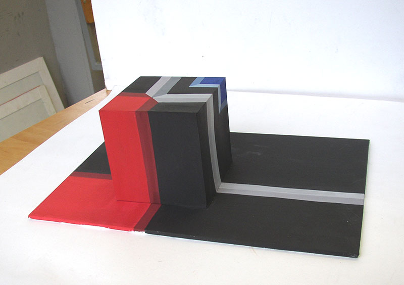
Иллюзия ассиметрии
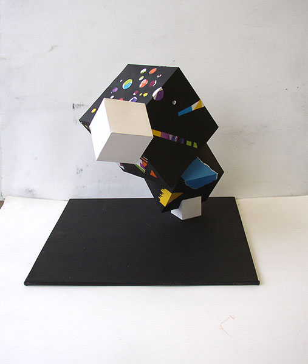
Цирк
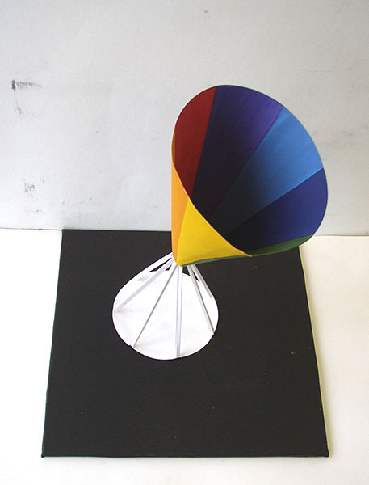
«Оптика»
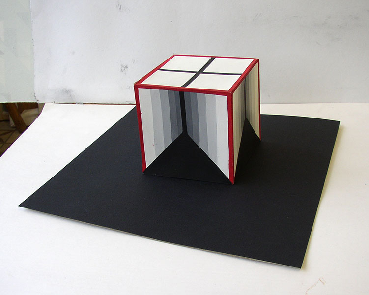
Иллюзия пространства
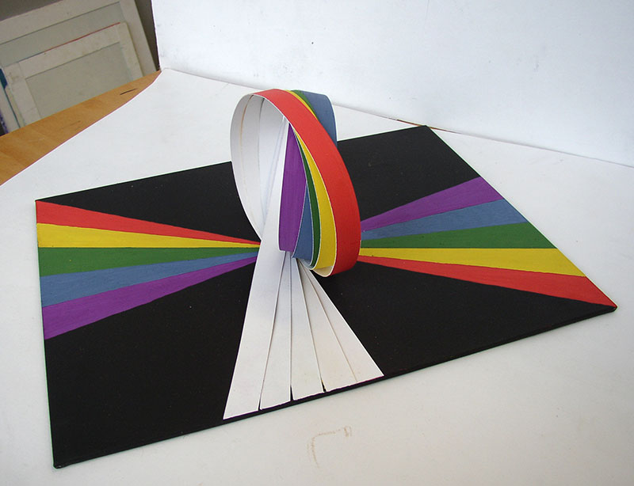
Соревнования по худ. гимнастике
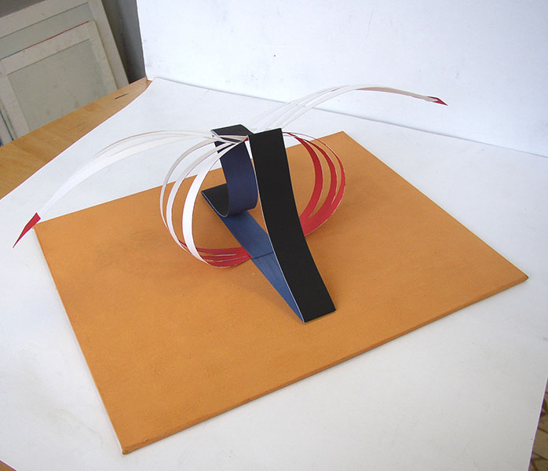
Соревнования по акробатике
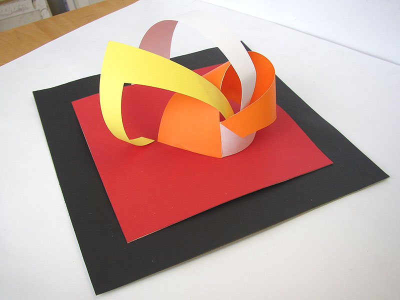
Школа современных танцев
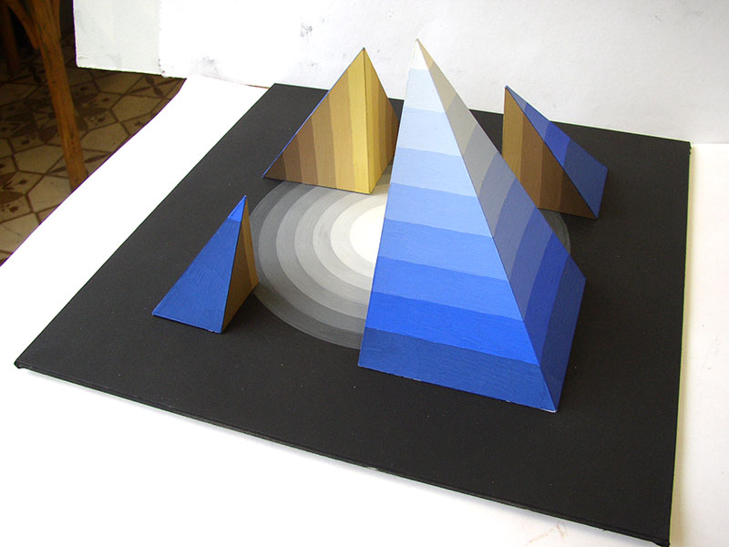
Конференция по астрономии
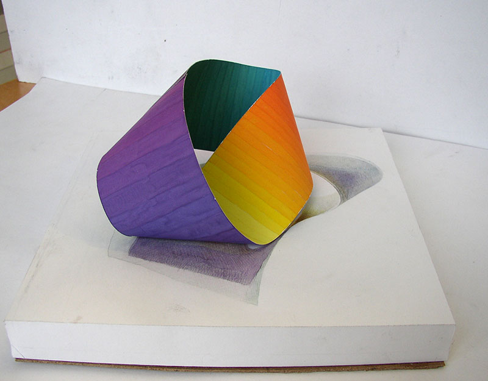
Конференция по оптике
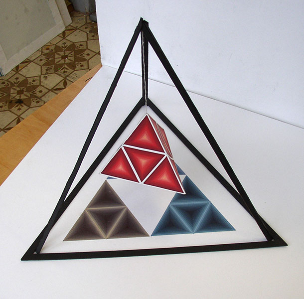
Тэтраэдр
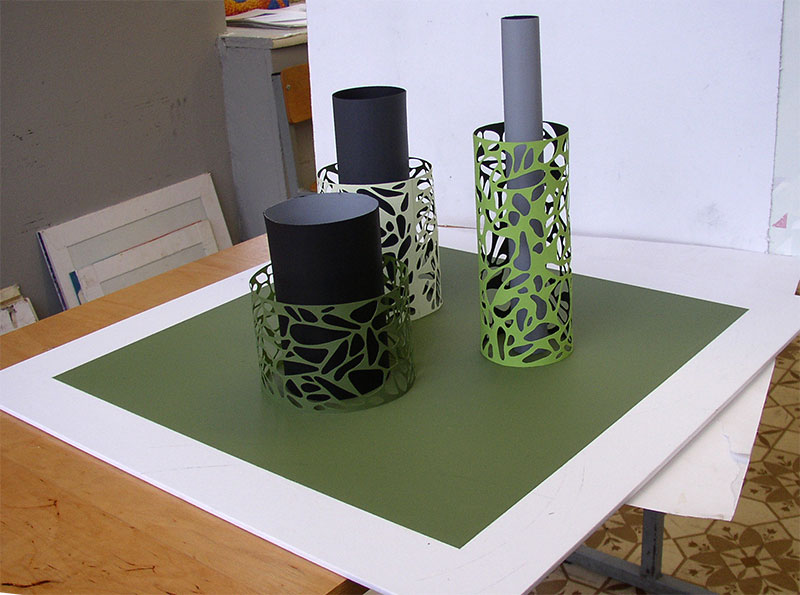
Природа и техника
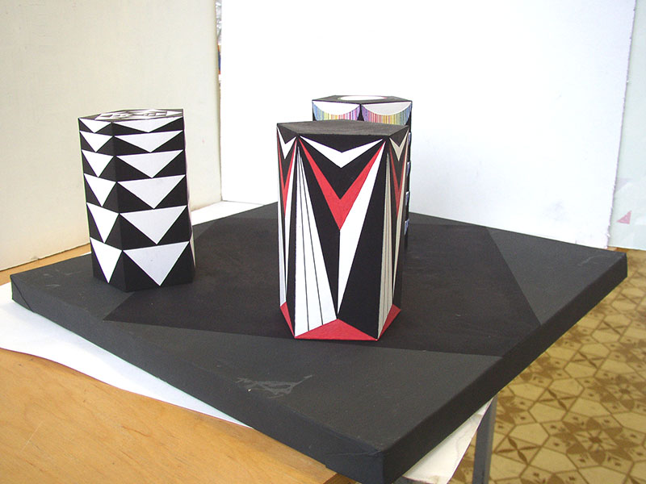
Призмы
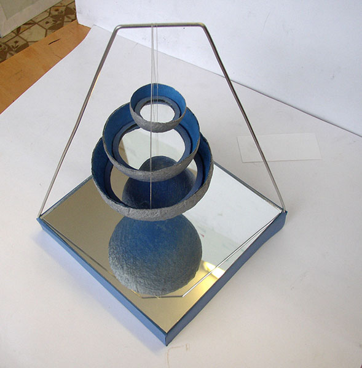
«Вода»
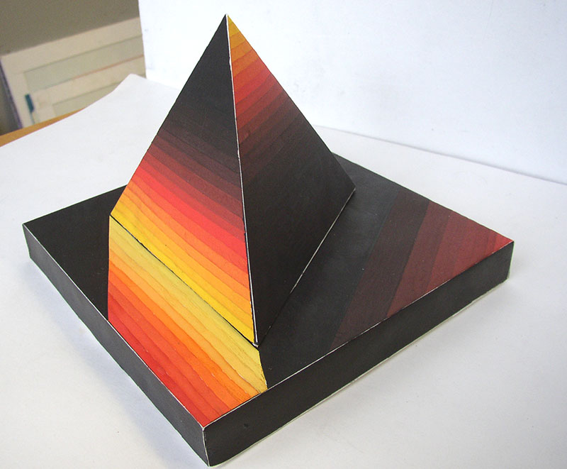
«Огонь»
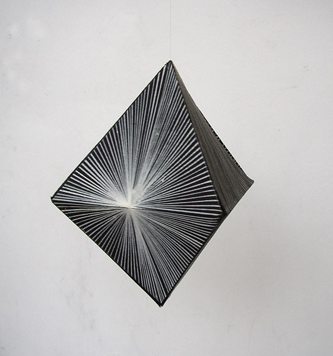
«Воздух»
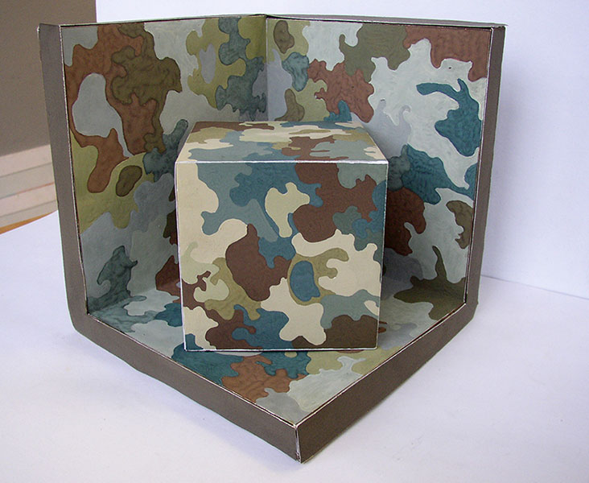
«Земля»
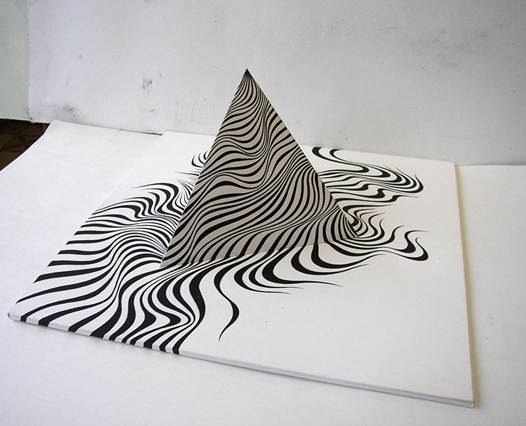
Пирамида